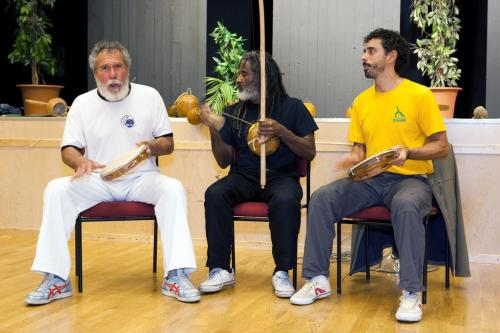

Капоэйра и мировые тенденции
Существует несколько достижений человечества, которые, я бы сказал, достигли точки невозврата. Среди них – глобализация и культурное многообразие. Будучи движущей силой для неуклонно растущего числа ценителей этого искусства по всему миру, капоэйра вобрала в себя оба феномена, включая и их потенциал, и скрытые недостатки. В данной публикации, помимо прочего, освещаются перемены, привнесенные в наши школы неолиберальной глобализацией, изменившие значение и социальную роль наших групп.
«Быть против глобализации – всё равно, что быть против солнечного затмения», — так Зигмунт Бауман комментирует движения „против глобализации“, или изменчивой современности, как он её называет. По мнению автора, «проблема и действительная задача движения заключается не в том, чтобы обратить вспять процесс унификации, охвативший планету, а в том, чтобы смягчить и контролировать прежде предоставленные сами себе последствия глобализации – и в том, чтобы превратить их из угрозы человечеству в источник новых возможностей». (Bauman and Vecchi; 2004: 87) Полагаю, что при развитии наших школ мы сталкивается с той же самой проблемой.
Не является исключением и культурное многообразие, вызванное изменчивостью современного мира – сегодня остаться в стороне от него практически невозможно. Однако у каждого есть выбор: принимать многообразие как благо или же противостоять ему как злу. Капоэйра, культурное явление, распространённое по всему миру, испытывает на себе огромное влияние данного феномена, связанного со стремительными изменениями общества. Стюарт Холл, местре (магистр) культурологи поясняет:
«Поскольку культурное многообразие неизбежно в современном мире, а националистический абсолютизм в последнее время сдает позиции, сейчас наибольшую опасность представляют попытки сохранить национальную и культурную самобытность – исторически сложившуюся или новоприобретённую – путём изоляции культуры и общественной жизни и отказа признать… сложности, возникающие в борьбе за сохранение различий» (Hall; 1993)
Любое сходство капоэйры с окружающей реальностью – не просто совпадение. Внутри нашего искусства существует градация от очень консервативных течений, создающих закрытые коллективы, до ориентированных на коммерческий успех групп, которые в процессе обучения капоэйре вдалбливают ученикам в головы стереотипы, касающиеся бразильской культуры. Конечно, где-то между этих двух крайностей есть мудрые и достойные люди, которые видят в нашем искусстве возможности самовыражения и образовательный потенциал. Однако, поскольку эти мудрые люди с трудом вписываются в систему ярлыков, сопутствующую культурному многообразию, то в большинстве случаев они сталкиваются с непониманием радикально настроенных противников с обеих сторон.
Консервативные течения, несмотря на крайне политизированные заявления, принимают мало участия в решении проблемы адаптации искусства к местным особенностям культуры. C другой стороны, коммерческие группы либо настаивают на изоляции учеников, чтобы обезопасить свои хрупкие „устои“, либо вступают во взаимодействие с другими школами, главным образом, ради соревнования и укрепления своей внешней лже-самобытности (что отнюдь не соотносится с истинными принципами и основами капоэйры).
В непрестанно меняющемся мире, где соперничество резко обостряет чувство индивидуализма и незащищенности, где государство больше не желает выполнять обязательства перед гражданами, «мужчины и женщины нашего времени подозревают, что стали пешками в чьей-то игре, беззащитными перед волей крупных игроков… мужчины и женщины нашего времени страшатся призрака социальной исключенности» (Bauman and Vecchi; 2004: 46-47. Курсив оригинала сохранен)
Группы капоэйры, являясь «закрытыми сообществами», играют в социуме важную роль. Эти объединения берут на себя задачи и обязанности, от которых устранилось гражданское общество. Они также привносят в жизнь участников компоненты, нехватка которых ощущается наиболее болезненно и не может быть восполнена обществом в целом: наличие цели в жизни, того, ради чего стоит жить (или умирать)… „В этом плане, «заново родиться“ и обрести новую семью, безопасный и тёплый дом – искушение, перед которым трудно устоять». (Bauman and Vecchi; 2004: 47,87) Проблема, связанная с подобными учреждениями, заключается в том, что, несмотря на чувство вовлеченности участников в жизнь небольшой социальной группы, структура подобных групп, как правило, не позволяет вступать во взаимодействие с обществом и добиваться диалога, столь необходимого для более полноценного включения в социум.
С другой стороны, для тех, что все ещё готов потреблять активно продаваемые образцы «самобытной культуры», существует достаточное количество расхожих стереотипов. Происходит выдвижение ложных ценностей, ориентация на внешний облик и поверхностные мотивы, что заставляет вспомнить malandro, крутых бойцов и привлекательных хрупких девушек в капоэйре. Хотя подобные стереотипы не отражают ни суть капоэйры, ни бразильскую культуры в её многообразии, эти „кукольные“ персонажи превосходно вписываются в картину космополитичного мира, которую нам навязывают масс-медиа. Как отмечает Бауман по поводу бесчисленных мелких и/или недолговечных образов, получивших распространение благодаря неолиберализму и его варианты космополитизма: «Когда качество оставляет желать лучшего или является недоступным, люди ищут спасение в количестве». (Bauman and Vecchi; 2004: 31)
Однако в обоих случаях, при условии, что мы сможем избежать ограниченности, присущей сторонникам крайностей, и переосмыслить роль наших групп, у нас есть шанс увеличить их вклад в дело образования и социальной включенности. Если реорганизовать группы на основе изначальных гуманистических принципов нашего искусства, мы сможем направить усилия на самовыражение и сплоченность, необходимые для образования и общественной жизни.
Милтон Сантос (2008) также обращает внимание на необходимость вернуться к первоначальному образцу организации школ, чтобы целью их работы стало сохранение общечеловеческих ценностей. Автор поясняет, что глобализация, как её видит большинство – не более чем вымысел. Образ всемирной деревни, где царит всеобщее равенство, и все события тут же попадают в выпуск новостей, где время и пространство сокращаются благодаря достижениям техники, якобы доступных всем и каждому, где границы государств размыты благодаря финансовой мощи международных корпораций – это концепция, изобретенная СМИ в попытке укрепить идеологию самих международных корпораций.
Сантос раскрывает, как работает эта схема, приводя убедительные доказательства. Содержание выпусков новостей, объясняет автор, находится в строгом соответствии с тайным планом международных компаний. Время и пространство покоряются лишь незначительной части населения планеты — тем, кто живет в мегаполисах развитых стран и/или может себе позволить выезжать за границу. Даже Интернет, ещё одна движущая сила глобализации и мультикультурализма на местном уровне, остается недоступным для большинства жителей развивающихся стран. Относительно снижения роли государства как института Сантос полагает, что найдутся и сторонники противоположной точки зрения: государство укрепляет свои позиции, но идет навстречу экономическим требованиям транснациональных корпораций, а не нуждам своих граждан (Santos, 2008: 19).
Эти ложные представления оказывают сильное воздействие и на группы капоэйры. Всё больше школ ведут себя как международные корпорации, стремясь занять место на мировом рынке и превращая искусство в продукт на полках нео-либерального мира, как будто у них нет иного выбора. И в противовес им, в борьбе с индивидуализмом, социальной нестабильностью, одиночеством, обреченностью на бесцельное и бессмысленное существование, некоторые группы превращаются в объединения почти фундаменталистского характера, проповедующие мифы о собственной исконности и нетерпимые к многообразию. Таким образом, без должных размышлений и доли самокритики, большинство школ следует за мировыми тенденциями к сегрегации.
«Считается, что так называемый мировой рынок способен привести планету к единообразию, в то время как в действительности местные различия только усугубляются. Существует стремление к единению, поддерживаемое крупнейшими мировыми лидерами, но выясняется, что мир не так един, и мечта об истинном мировом гражданстве дальше, чем кажется». Сообщество капоэйры и школы, его составляющие, не могут достигнуть абсолютного единообразия стандартов образования, общественной жизни и терпимости к многообразию, ни со стороны „закрытых сообществ“, ни коммерческих групп. От нас требуют принять эмблему и традиции групп-представителей культуры капоэйры. Некоторые из нас пытаются компенсировать чувство случайности своего выбора осознанием принадлежности к группе. Большинству навязывают стереотипы поведения, основанные на соперничестве школ и различных предрассудках.
Однако, как выразился Бауман относительно глобализации, «быть «против групп» — все равно, что быть против солнечного затмения». Нельзя обратить вспять повсеместное распространение капоэйры после 70х, которое усилилось в 80х с появлением известных нам групп. Тем не менее, совсем не обязательно потакать искажению философских принципов капоэйры или принимать популярное убеждение, что «если мы не будет делать, как группа (или направление) X или Y, они одержат верх».
Напротив, чем сильнее мы пытаемся соревноваться с этими ориентированными на коммерческий успех школами, тем больше появится групп с аналогичными беспринципными стратегиями. Как говорится, „чтобы победить чудовище, надо стать чудовищем“. За руководством к действию мы должны обратиться к специфике исторических и социальных условий зарождения капоэйры в Бразилии.
Настоящая rasteira для тех, кому выгоден существующий миф о глобализации – вернуть нашим школам их первоначальную роль, руководствуясь тем, что лучше для нас. В основе организации групп капоэйры могут лежать этические принципы, широта мировоззрения, терпимость к многообразию — вместо коммерческих интересов. Можно использовать интернет для обмена опытом адаптации к местным особенностям, для создания социальной сети взаимосвязанных групп вместо продвижения знаменитостей или рекламы своих занятий. Перенаселённые и угнетающие личность большие города могут стать центрами межкультурной коммуникации и развития идей социальной включенности и единения – а не полем битвы различных групп за нишу на рынке.
«Долг образования будущего – позаботиться о том, чтобы идея о единстве человечества не повредила многообразию мира, а многообразие не стало препятствием на пути к единению. Именно единство заключает в себе принцип бесконечного многообразия. Понять, что такое человечество, означает осознать невозможность единства без многообразия, а многообразия – без единения». (Morin, 2001: 55)
У нас уже есть и материал, и технические условия (у большинства из нас, по крайней мере), нужно всего лишь изменить систему, по которой функционируют наши группы.
By cm Eurico
огроммное спасибо за помощь в переводе Ксении